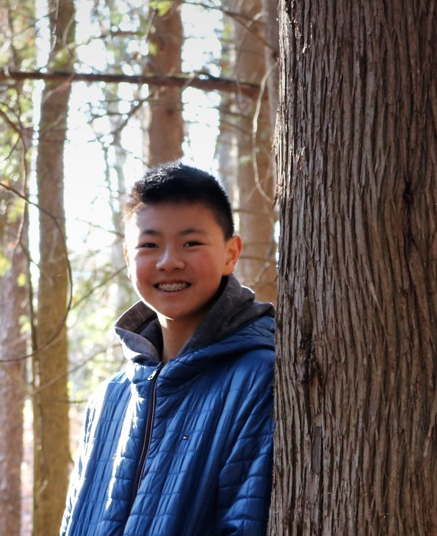

| Hi there! My name is Kelvin Xu, and I am
a grade 9 student attending the IB program at Victoria Park Collegiate
Institute. I am a male and my birthday is October 31, 2006, which is
pretty cool because my birthday is on Halloween! I was born in Toronto,
Canada and have live here my whole life. At the time of creating this
webpage, I am currently taking ICS, a computer science course, which has
brought me to the creation of this. On this webpage, you will find some
information about myself, my family, my hobbies/interests and learn some
fun facts about me. |
|
So far, I've been to 4 schools, the first
of which being Terry Fox P.S. I went there from Kindergarten to grade 3,
which I was then placed into the gifted program at Fairglen J.P.S, which I
stayed there up until grade 6. I then moved to a middle school called J.B.
Tyrrell and stayed in the gifted program until grade 8. I am currently
enrolled in the Pre-IB program here at Victoria Park C.I, which I hope to
stay in for the following years. Due to the pandemic, this year is a little
different, education and personal wise, so things are quite different, but
that just means more self learning and time management, 2 things which my
previous schools and programs also needed both of those things.
As for extracurriculars, I take piano lessons and play many sports,
including hockey, baseball and golf. In school last year, I was part of
the student council and helped out in the library and office sometimes. I
used to volunteer at places, but because of Covid-19, I stopped for a while,
and haven't gone back since.
|
 |